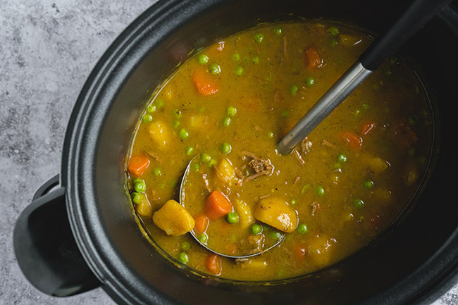

Crock Pot Curry

Description
Curry did not migrate to Japan directly from other Asian countries where curries are prevalent, it came through colonialism and the British navy! So, take an Indian curry, filter it through the flavor palate of the British, and put some Japanese umami flair on it, there you have it! Karē raisu. Even the name for curry and rice sounds like English.
Japanese curry is much thicker than the Indian and Thai curries that most westerners are familiar with. The base is made from a roux of oil (sometimes butter) and flour, which is why a boxed version sold in Japan is frequently referred to as “curry roux”.
This thicker curry is much better to pair with the stickier, short-grain rice typically used in Japanese cooking. When you add a thin curry to a sticky rice, it separates the grains, changing the consistency of the dish. But, if you can’t find Japanese rice, the second-best choice would be jasmine rice. Basmati rice is going to be a little bit odd with such a thick curry.
Ingredients
- 3 medium potatoes
- 3-4 medium carrots
- 1/4 cup oil
- 1 lb. beef stew meat
- 1 medium onion
- 1 clove garlic
- 1 tsp salt
- 1/2 tsp ground black pepper
- 2 cups beef broth
- 2 cups water
- 3 tbsp all-purpose flour
- 1 tbsp curry powder
- 1 cup frozen peas
- cooked white rice
Steps
- Place the potatoes into the slow cooker. Layer the carrots on top.
- Heat 1 tablespoon of the oil in a large skillet. Add the meat and brown on all sides. Do it in batches, if needed, do not overcrowd the pan. Transfer the beef to the slow cooker.
- Heat another tablespoon of the oil in the skillet. Add the onion and garlic. Cook, stirring for about 5 minutes, until softened. Add the salt and black pepper and cook 2-3 minutes more. Transfer to the cooker.
- Pour the beef broth into the skillet and bring to a boil. Scrape up any browned bits stuck to the bottom of the pan. Transfer to the slow cooker. Add the water. Cover and cook on LOW for 6-7 hours. The meat should be tender and the vegetables cooked through.
- In a small saucepan, heat the remaining 2 tablespoons of the oil. Add the flour and cook, stirring, about 5 minutes, until it begins to brown. Add the curry powder and cook, stirring, about 1 minute more. Remove from the heat.
- Switch the slow cooker to HIGH. Scoop out 1/2 cups of the cooking liquid and mix it with the flour mixture, until smooth. Stir into the stew a little bit at a time. Stir carefully to not break up the potatoes and the carrots. Finally, add the frozen peas.
- Cover the slow cooker and cook on HIGH for about 20-30 minutes, until the sauce thickens and the peas are heated. Serve the curry with white rice.